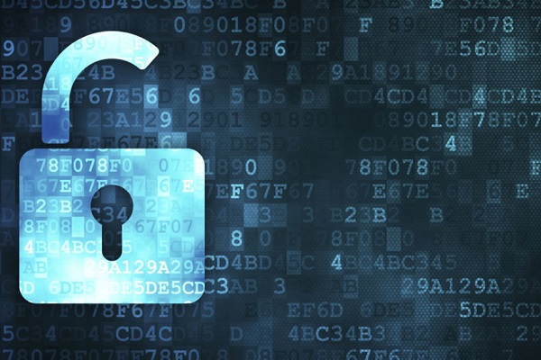

Es el proceso de eludir y localizar el uso no autorizado de un sistema informático con el objetivo de proteger la integridad y la privacidad de la información almacenada en un sistema informático.
En otras palabras, busca proteger contra intrusos el uso de nuestros recursos informáticos con intenciones maliciosas o con intención de obtener ganancias, o incluso la posibilidad de acceder a ellos por accidente.
La seguridad informática es conformada por medidas de seguridad, como programas de software de antivirus, firewalls, y otras medidas que dependen del usuario, como es la activación de la desactivación de ciertas funciones de software.
A raíz de la inmensidad de riesgos que entrañan las conexiones a Internet, la seguridad se ha vuelto un concepto que no solo implica la calidad de los sistemas y los servicios, sino también el prestigio de las empresas que los proporcionan.
El objetivo es evitar que las comunicaciones estén desprotegidas ante posibles pérdidas o interceptación de datos.
La seguridad informática siempre se mantendrá en desarrollo y las amenazas para los mismos proliferan día a día
Actualmente, la práctica totalidad de las organizaciones dependen en mayor o menor medida de sistemas informáticos. Por ello el desarrollo de la seguridad se desempeña de manera constante. Los distintos tipos de seguridad informática son:
Seguridad de hardwareEste tipo de seguridad tiene que ver con los dispositivos que se usan para escanear un sistema o para el control del tráfico de una red. Como ejemplos de ellos se encuentran los firewalls o cortafuegos de hardware y en servidores proxy.
Pero también se pueden encontrar módulos de seguridad para hardware. Los cuales sirven para el suministro de claves encriptadas y destinadas a funciones de nivel crítico como el cifrado, el descifrado y la autenticación para varios tipos de sistemas.
De todos los tipos de seguridad informática, los sistemas de seguridad de este tipo son los que proporcionan los niveles de protección más altos y robustos. Además, también pueden servir de capa adicional de seguridad para sistemas de gran importancia.
El objetivo es evitar que las comunicaciones estén desprotegidas ante posibles pérdidas o interceptación de datos
La seguridad de hardware, sin embargo, también hace referencia a las aplicaciones con las que se pueden proteger los ordenadores y dispositivos de cualquier tipo de daño.
Si se necesita evaluar la seguridad del hardware de un equipo, es imprescindible contar con las vulnerabilidades que aparecen desde su fabricación, y evaluar otras fuentes potenciales de riesgo. Por ejemplo, las características del código que se ejecutan en los programas en el hardware y para los dispositivos de entrada y salida de la información que se conectan a la red.
Seguridad de softwareEste tipo de seguridad es el que se pone en práctica para la protección de programas y aplicaciones y programas contra los ataques de los delincuentes informáticos y otros tipos de riesgos, con el fin de que cualquier tipo de software continúe funcionando de manera correcta y eficiente pese a la existencia de dichos riesgos.
Es necesaria para garantizar integridad de datos, autenticación de los mismos y su constante disponibilidad. Es un campo de la seguridad informática que se considera nuevo. Pues los primeros documentos y clases académicas que se realizaron sobre el tema aparecieron a partir del año 2001.
Es decir, que los desarrolladores, arquitectos de programas y aplicaciones y los científicos en informática llevan trabajando en métodos de desarrollo de software seguro desde hace relativamente poco.
Los problemas del software implican varias ramificaciones en el estudio de la seguridad. Como pueden ser los errores en implementación, desbordamientos de buffer, los defectos en el diseño o la mala respuesta ante posibles errores, entre otros problemas.
Con demasiada frecuencia intrusos malintencionados tratan de introducirse en los sistemas informáticos utilizando precisamente las vulnerabilidades descritas en el software
A pesar de todo, intrusos malintencionados tratan de introducirse en los sistemas informáticos utilizando precisamente las vulnerabilidades descritas en el software. Por ello, toda aplicación que tiene alguna salida de conexión a Internet presenta riesgos añadidos, que implican la adopción de niveles de seguridad más altos.
Las carencias en seguridad para el software son más habituales en dichos casos, y la problemática no deja de crecer con el aumento de usuarios y de delincuentes informáticos.
La seguridad para el software busca aprovechar las prácticas de ingeniería de desarrollo y la implementación de medidas de protección, desde el inicio de los ciclos de vida para todo programa o aplicación.
Seguridad de redEste ámbito de la seguridad en informática hace referencia a toda actividad cuya finalidad sea la protección de una red. Con ello, se busca fomentar la facilidad en el uso, aumentar la fiabilidad, conservar la integridad y mantener la seguridad para la transmisión de todos los datos.
Un modelo de seguridad de red efectivo se dirige contra una serie de amenazas y contra los métodos, por los cuales se introducen o difunden los dispositivos conectados.
Tipos de amenazas
Existen multitud de tipos de amenazas para las redes, y la mayoría de ellas se propagan desde Internet. Entre las más comunes se encuentran:
- Los virus, programas gusano y de tipo caballo de Troya.
- Ataques por parte de delincuentes informáticos o hackers.
- Software espía y de propaganda invasiva.
- Ataques de día cero, o de hora cero.
- Robo de datos o interceptación de los mismos en comunicaciones.
- Ataques de denegación del servicio.
- Robo de datos personales e identidad.
No existen soluciones únicas para los varios tipos de amenazas, por lo que siempre son necesarios varios niveles de seguridad a la hora de tratar con redes. De este modo, si uno de los niveles de seguridad es franqueado, los demás pueden detener la amenaza.
Para ello, es recomendable que el software se mantenga constantemente actualizado, para conseguir que se proteja de toda innovación en amenazas informáticas.
Normalmente, los mecanismos de seguridad para las redes se componen de multitud de componentes, y el escenario ideal es aquel en el que todos ellos trabajan de manera sinérgica para minimizar el mantenimiento y mantener altos los niveles de protección.
Componentes de seguridad informática
Corresponden a los siguientes tipos:
- Programas antivirus y antispyware.
- Cortafuegos o firewalls, que bloquean accesos sin autorización a una red.
- Modelos de prevención de intrusiones o IPS, que identifican amenazas de propagación rápida, como pueden ser los ataques de día cero o de hora cero.
- Diseño de redes privadas virtuales o VPN, que proveen de un sistema de acceso remoto y seguro para los sistemas locales.
- Los tipos de seguridad informática siempre se mantendrán en desarrollo. Pues la innovación en tecnología de los equipos y su conexión a Internet son constantes, y las amenazas para los mismos proliferan día a día.
La seguridad informática sirve para garantizar la privacidad de la información y la continuidad del servicio, tratando de minimizar la vulnerabilidad de los sistemas y de la información contenida en ellos, así como de las redes privadas y sus recursos.
En este sentido, la Seguridad Informática sirve para la protección de la información, en contra de amenazas o peligros, para evitar daños y para minimizar riesgos, relacionados con ella.
La seguridad informática debe vigilar las siguientes propiedades:
PrivacidadLa información debe ser vista y manipulada solo por quien o quienes tengan el derecho de hacerlo. Un ejemplo de ataque a la Privacidad es la Divulgación de Información Confidencial o personal.
IntegridadLa información deber ser consistente, fiable y no propensa a alteraciones no deseadas. Un ejemplo de ataques a la integridad es la modificación NO autorizada de los saldos en un sistema bancario, es decir, la modificación de números en un banco que provoca un caos en el ente financiero.
DisponibilidadLa información debe estar en el momento que el usuario requiera de ella. Un ataque a la disponibilidad es la negación de servicio, (Denial of Service o DoS), que es un ataque a un sistema de computadoras o red que causa que un servicio o recurso sea inaccesible a los usuarios legítimos.
Seguridad informática.
Dentro del concepto de seguridad de una computadora, se distinguen:
Seguridad Física
Comprende el aspecto de hardware (mouse, monitor, teclado, etc.), la manipulación del mismo, así como también del ambiente en el cual se va a instalar el equipo (en particular, la sala de servidores).
Seguridad Lógica
Comprende el aspecto de los sistemas, tanto operativos como de aplicaciones, y principalmente de la información del usuario.
Incluye todo lo que hace referencia a la seguridad en todas sus formas de comunicación.

- Asegura la integridad y privacidad de la información de un sistema informático y sus usuarios.
- Medidas de seguridad que evitan daños y problemas que pueden ocasionar intrusos.
- Crea barreras de seguridad que no son más que técnicas, aplicaciones y dispositivos de seguridad, como corta juegos, antivirus, anti espías, encriptación de la información y uso de contraseñas protegiendo información y equipos de los usuarios.
- Capacita a la población general, sobre las nuevas tecnologías y amenazas que puedan traer.
- La seguridad absoluta es imposible y la seguridad informática es un conjunto de técnicas encaminadas a obtener altos niveles de seguridad en los sistemas informáticos.
- En los equipos de cómputo más desactualizados un antivirus realmente efectivo puede ser muy pesad, puede hacerlos más lentos y ocupar mucho espacio en memoria.
- Los requisitos para la creación de contraseñas son cada vez más complejos, la mayoría de los sitios web requieren inicio de sesión, y el cambio de contraseñas con frecuencia se ha vuelto obligatorio en muchos lugares de trabajo, recordarlas en ocasiones es muy difícil.
¿Cuáles son los protocolos de seguridad de la información?
Cuando navegamos a través de internet nuestro navegador está intercambiando datos con las diferentes páginas web que visitamos. En ocasiones son datos que se comparten de forma automática, como nuestra dirección IP o nuestro historial de búsquedas, pero otras veces es información que damos de forma consciente como la tarjeta de crédito en una tienda online.
En cualquier caso, Internet es una red al alcance de todos y por tanto la información podría ser vista por otros de no estar protegida. La forma en la que se protege esta información es a través de protocolos de seguridad. En este post te explicamos cuáles son los principales protocolos de seguridad de la información en internet.
¿Qué son los protocolos de seguridad de la información?
Los protocolos de seguridad de red son un tipo de protocolo de red que garantiza la seguridad y la integridad de los datos en tránsito a través de una conexión de red como Internet. Están diseñados principalmente para evitar que usuarios, aplicaciones, servicios o dispositivos no autorizados accedan a los datos de la red. Esto se aplica a prácticamente todos los tipos de datos, independientemente del medio de red utilizado.
Tipos de protocolos de seguridad de la información
- Protocolo TCP/IP
El protocolo TCP / IP es el protocolo de comunicación fundamental de Internet y consta de dos protocolos, el TCP y el IP. El objetivo es que los ordenadores se comuniquen de una forma sencilla y transmitan información a través de la red.
- Protocolo HTTP
El protocolo HTTP (Protocolo de transferencia de hipertexto) se basa en www (World Wide Web) que transmite mensajes por la red. Por ejemplo, cuando un usuario ingresa al navegador y ingresa en la URL una búsqueda, la URL transmite los mensajes por HTTP al servidor web que el usuario solicitó. Luego, el servidor web responde y entrega los resultados de los criterios de búsqueda que había solicitado.
- Protocolo FTP
El protocolo FTP (protocolo de transferencia de archivos) se usa generalmente para transferir archivos a través de Internet. FTP usa un cliente-servidor para compartir archivos en una computadora remota. La forma en que funciona el FTP es como HTTP para enviar páginas web desde
- Protocolo SSH
El protocolo SSH (Secure Socket Shell) proporciona una forma segura de acceder a internet a través de un ordenador remoto. SSH proporciona autenticación y encriptación entre dos computadoras que se conectan a Internet. SSH es bien utilizado por las administraciones de red para administrar sistemas por acceso remoto.
- Protocolo DNS
El protocolo DNS (Sistema de nombres de dominio) mantiene un directorio de nombres de dominio traducidos a direcciones IP. El DNS rastrea al usuario para ubicar la dirección web en la dirección IP correspondiente. Por ejemplo, si un usuario ingresa la URL google.com, el servidor web no está leyendo el nombre google.com está leyendo la dirección IP NUMÉRICA que corresponde a google.com (208.65.155.84.).
Con los postulados fundamentales bien afianzados en el entorno informático, la seguridad informática está preparada para ejecutar un conjunto de funciones dedicadas a la protección de la información, almacenada en hardware, manipulada por softwares y transmitida en redes de computadores. Por lo tanto, las principales funciones de la seguridad informática son:
Regular las actividades en el entorno informáticoPor medio de la aplicación de leyes, normas, reglas y protocolos restrictivos del orden jurídico, los componentes de la seguridad informática hacen valer su autoridad estableciendo controles de autentificación al acceso de la información, imponiendo condiciones a un grupo de usuarios con respecto a la manipulación de la información.
Prevenir los ataques cibercriminalesMás allá de combatir los efectos perjudiciales de las amenazas, la seguridad informática debe estar volcada a la prevención de tales adversidades, con el fin de garantizar la integridad y confiabilidad de los usuarios autorizados a acceder a la información, incluyendo el estado original de los activos informáticos y el de su infraestructura.
En caso de que se produzca alguna ruptura en las barreras de protección de la seguridad, debido a la explotación de vulnerabilidades en el entorno informático o cualquier otra causa, el sistema de seguridad informática debe estar capacitado para aplicar métodos y protocolos de contención y captura de la amenaza, impidiendo que esta siga comprometiendo la integridad del entorno informático, hasta el punto de que los efectos sean irreversibles.
Enfrentar a los elementos maliciososUna vez las amenazas han sido capturadas y contenidas, el sistema de seguridad informática debe aplicar protocolos, métodos y herramientas para eliminar a los elementos maliciosos del entorno informático.
¿Por qué es tan importante la seguridad informática?La seguridad informática es importante ya que nos ayuda a impedir el robo de datos como: números de cuentas bancarias, información de tarjetas de crédito, contraseñas, documentos, hojas de cálculo, etc.
Los datos presentes en un ordenador también pueden ser mal utilizados ya que un intruso puede modificar y cambiar los códigos fuente de los programas y también puede utilizar imágenes o cuentas de correo electrónico para crear contenido..
Ejemplos de la seguridad informática:Desde la década de los 80 del siglo pasado hasta nuestros días, las medidas de seguridad informática han crecido en número y en complejidad para proteger eficientemente a la infraestructura computacional y a la información de los cibercrímenes. Entre todas las medidas de seguridad informática que han sido creadas destacamos los siguientes ejemplos:
Copias de seguridadA pesar de ser un método simple de la seguridad informática, las copias de seguridad (backups, en terminología anglosajona) permiten restaurar a un estado anterior óptimo a los sistemas operativos que se han visto afectados gravemente por alguna amenaza, por errores o eventos desastrosos de naturaleza fortuita. Este método es usualmente implementado en las organizaciones y empresariales con el fin de resguardar por completo sus activos informáticos. Entre los softwares de backups más populares se encuentran:
- ZendalBackups.
- Cobian.
- SeCoFi.
- CopiaData.
- NortonGhost.
Los antivirus son uno de las medidas de seguridad informática de mayor práctica común, ya que permite proteger al computador o dispositivo inteligente de los diferentes tipos de malware que abundan en el internet. En concreto, los antivirus son programas que además de detectar y eliminar todo tipo de malware, encargándose de bloquear, desinfectar y prevenir las infecciones informáticas. Algunos de los antivirus más usados en la actualidad son:
- Kaspersky Antivirus.
- Avast Antivirus.
- AVG Antivirus.
- ESET Smart Security.
- McAfee VirusScan.
Firewall es un término anglosajón, cuya traducción al español es cortafuego, con el cual se define a la parte de la red de computadores que se encarga de bloquear el acceso no autorizado. El firewall está compuestos por un conjunto de dispositivos que han sido configurados para habilitar, restringir y encriptar el tráfico de una red, siguiendo una serie de reglas y protocolos:
- Firestarter.
- ZoneAlarm.
- Uncomplicated Firewall.
- Gufw.
- ipfw.
Las redes privadas virtuales, o también conocidas como Virtual Private Network (VPN) son una modalidad de las arquitecturas de las redes de computadoras, en la cual se establece una extensión segura de la red de área local (LAN) sobre una red pública como el internet. Con esta modificación se logra que el dispositivo transmita y reciba información en redes públicas como si fuera una red privada en su totalidad, ya que adquiere las funciones, políticas y seguridad de una red privada.
Encriptaciones Las encriptaciones son el resultado de la aplicación de los conocimientos de la criptografía, criptología y criptociencia, las cuales consisten en procesos matemáticos (mediante algoritmos, generalmente) de cifrado de la información. El cifrado implica transformaciones de la sintaxis y la semántica de la configuración original de la información, convirtiéndola en un galimatías o en un contenido ininteligible, a menos que se cuente con la clave lógica que guía la reversión del proceso de cifrado.
La cibercriminología es un área especial de la criminología que se especializa en el estudio de las causas, factores y escenarios que intervienen e influyen en el desarrollo de cibercrímenes. El objetivo es prevenir los crímenes que se lleven a cabo en el entorno cibernético o informático.
Biometría informáticaA raíz de las rupturas y explotación de las vulnerabilidades de las medidas de seguridad convencionales, como el robo de identidades por el cracking de contraseñas, se ha optado por las medidas biométricas, que consisten en la aplicación de conocimientos matemáticos y estadísticos relacionados con los caracteres físicos o psicológicos de individuos para elaborar técnicas innovadoras de autentificación.